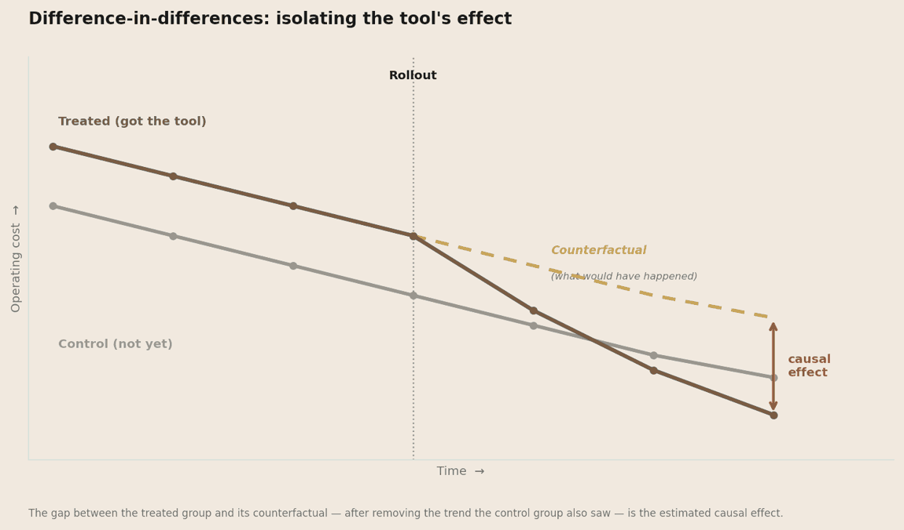
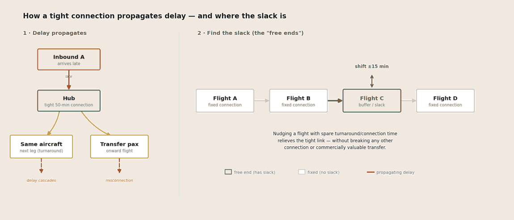
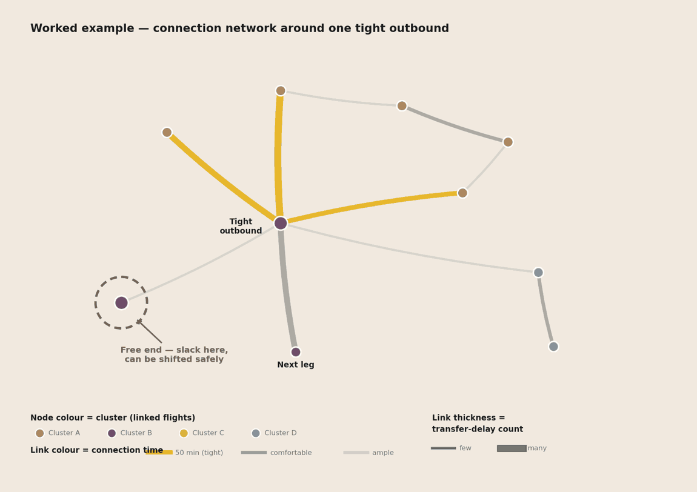
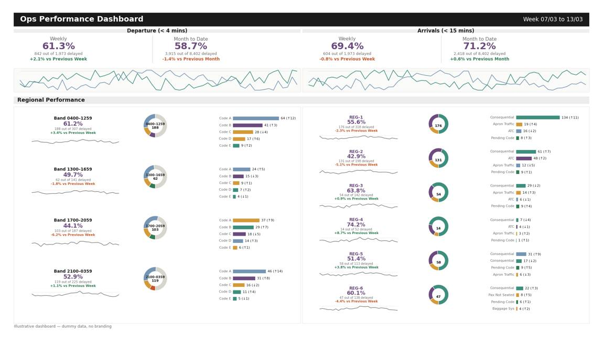
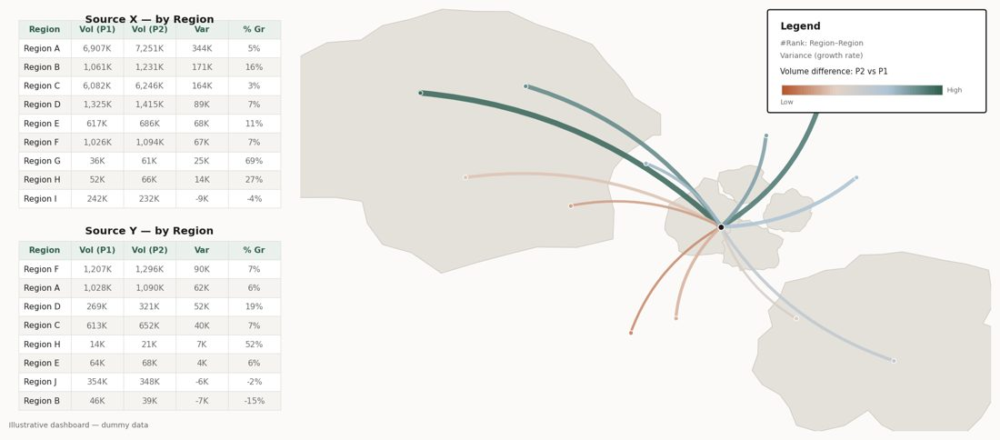
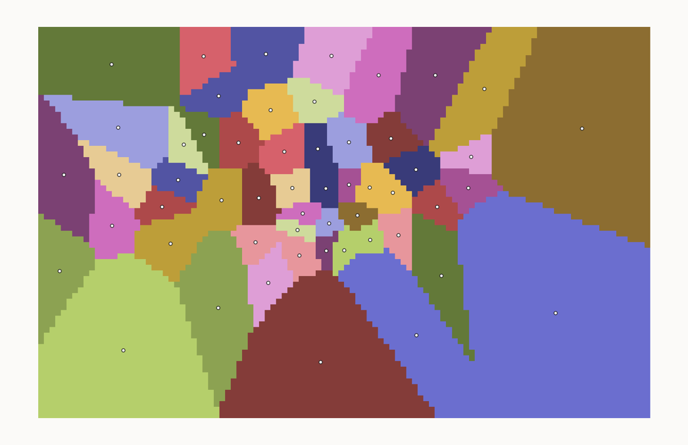
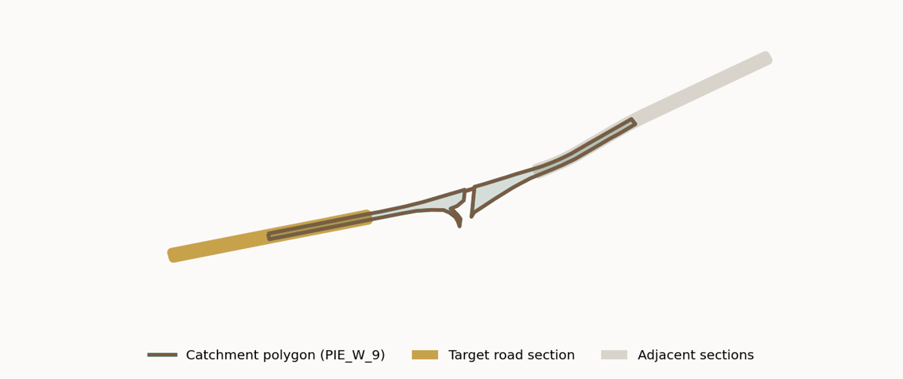
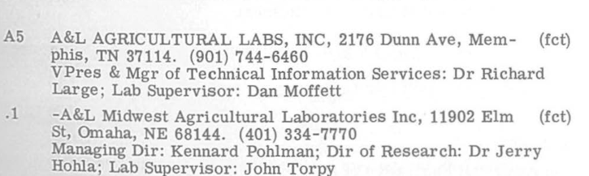

A mechanical engineer and researcher with 8 years in data, analytics, and AI. I believe in learning through application — picking up whatever method a problem demands and putting it to work on real questions.
I trained as a mechanical engineer and spent several years as an engineer at Singapore's Land Transport Authority. Engineering taught me to analyse a problem sharply — to break a complex issue into its moving parts and work out which one is actually driving it.
I then moved into research, completing a master's in economics and working as a research associate at NUS on policy questions. Research taught me how to make sense of data: how to assemble it from different sources to test a hypothesis, and how to eliminate the explanations that don't hold up.
My data and analytics work draws on both. I enjoy discovering insights that improve policies and processes, using tools I've largely taught myself on the job — and I'm looking for a driven environment where I can keep building, particularly in data science and AI.
Automates the manual work of tracking competitors' financial reports — collecting the documents, extracting the figures, checking them, and drafting a summary, with an analyst approving the result before it's recorded.
Tracking competitors usually means an analyst visiting dozens of websites, downloading one report after another, and copying the same figures into a spreadsheet by hand. It takes time, mistakes creep in, and the data is often out of date by the time it's compiled.
The pipeline handles that routine. It collects the reports, extracts the figures from each one, checks them against past records, and writes a short summary. Anything it isn't sure about is flagged, and an analyst reviews and approves the figures before they're saved.
The work is handled by several AI agents that each take one role, coordinated as a team rather than a single model doing everything. A manager agent routes each report to the right specialist; an extractor agent pulls out the figures; a separate evaluator agent checks them against history and flags anything that looks off; and a summariser agent writes the performance summary. They pass work between each other and re-run a few times to resolve disagreements before anything reaches the analyst.
The point was to take the transcription work off the analyst, cut the errors that come with it, and keep the data current instead of updating it in occasional batches.
A planning tool for asset management that lets a planner describe a scenario in plain language and turns it into specific, checked changes — each one reviewed and approved by the planner before the plan is updated.
Asset-management planning often runs on a large, interlinked spreadsheet. It works, but it's slow to change, easy to break, and hard to audit — exploring a single scenario means hunting through dozens of linked cells across tabs and rebuilding the comparison by hand. By the time the answer is ready, the discussion has often moved on.
This tool lets a planner describe a scenario in their own words instead. It reads the request and works out the specific changes it implies — which items are affected, the revised values and dates, and the knock-on effect — then lists them for the planner to check. Nothing is written to the plan automatically; each change has to be approved first.
Approved changes feed into a calculation engine that recomputes the plan period by period and shows the resulting position. The work is split into three clear parts: reading the request, the planner's review and approval, and the projection maths — kept separate so each can be tested and trusted on its own.
The point was practical: spend less time on spreadsheet mechanics, lower the chance of manual mistakes, and make scenario planning quick enough to do in the moment — while keeping the planner in control of every change.
Automated the daily news clipping process end to end — pulling in articles, extracting the key points from each, and using GenAI to label them and flag the likely implications.
Compiling a daily news digest by hand is slow and repetitive: gathering the articles, reading each one, pulling out what matters, and noting why it's relevant. This project automated that routine so the time went into acting on the news rather than assembling it.
The pipeline brings the articles together with Excel Power Query, then uses R to orchestrate the processing. For each article, a GenAI step extracts the key points, assigns labels (such as topic or theme), and drafts a short read on the likely implications — turning a page of raw clippings into a structured, skimmable summary.
Built deliberately on accessible tools — Power Query and R rather than a heavy ML stack — so it was easy to run, maintain, and adjust as needs changed, while still putting GenAI to practical use on a real recurring task.
Determined a suitable delay threshold for an on-time-performance KPI, focused on how each minute of delay raises the risk of it propagating through operations.
The work set the delay threshold for on-time performance — whether a flight counts as on time within 5, 10, or 15 minutes. That threshold matters because it becomes the target the operation is measured and managed against, so it needs to reflect what actually affects operations rather than convention.
The core of the analysis was delay propagation: a delay on one flight can destabilise later ones through shared aircraft, crew, and transfer passengers. Using a logit model, the probability of a delay propagating was estimated for each additional minute of delay. This produced a clear relationship between the size of a delay and the likelihood it spreads to other flights.
A suitable threshold balances propagation risk against diminishing marginal returns — tight enough to keep delays from spreading, but not so strict that further tightening costs more than it gains.
Estimated the cost savings from a new aircraft-assignment software introduced to the operations team, using a difference-in-differences design to measure its effect rather than relying on a simple before-and-after comparison.
The operations team introduced a new software tool for aircraft assignment, and the task was to find out whether it actually reduced costs. A simple before-and-after comparison would be misleading, because costs could have moved for other reasons over the same period.
The software was rolled out progressively across the fleet rather than all at once, so at any point some aircraft were using it and others were not. This made a difference-in-differences design suitable: the aircraft not yet on the new software serve as a comparison group for the background trend, and the additional change among those already using it is attributed to the software.

This gave a more reliable estimate of the cost savings linked to the software itself, which could be used to assess whether the tool was worth its cost.
Analysed a hub transport network to find where delays propagate through tight connections — and identified the "free ends" with enough slack to be adjusted, easing those pressure points without breaking the rest of the network.
At a hub, a delayed inbound flight rarely stays a single problem. The delay propagates two ways: through aircraft turnaround (the same aircraft is due to fly the next leg) and through passenger transfers (connecting travellers and bags need to make an onward flight). Where connections are tight, one late arrival can ripple outward across the schedule.
I modelled the schedule as a connection network and looked for slack — the "free ends" where a flight had spare turnaround or connection time and could be shifted slightly (typically by a few minutes) to relieve a tight link. The constraint was that any change had to leave every other connection intact, and protect commercially valuable transfers in particular.


The output was a shortlist of low-risk timing adjustments that reduced exposure to delay propagation while preserving the network's existing connectivity — a way to make the schedule more robust without a costly redesign.
Designed interactive Tableau dashboards on top of SQL queries to give teams timely performance insights — headline numbers up front, with a deliberate flow that lets users drill from the summary down to the specific issue behind it.
The aim was to give operational teams timely performance insights — a weekly read on how things were tracking — without anyone needing to dig through raw data. I wrote SQL to shape and aggregate the underlying figures, then built interactive Tableau dashboards that surfaced the headline numbers first and let users drill into the detail behind them.
The flow of each dashboard was deliberate: it opens with top-line performance, then steps down into trends, then into the breakdown by segment, time band, and cause — so a reader can start at the summary and keep drilling until they reach the specific issue driving a number. The goal was that every view carried enough detail to act on, while still reading cleanly at a glance. Below are recreations of two such dashboards, rebuilt with dummy data to show the layout and drill-down structure without exposing operational figures.


Built an end-to-end pipeline to evaluate a fuel (petrol) policy — fusing large-scale taxi GPS data with weather data, correcting GPS loss in tunnels, processing ~4TB on an HPC cluster, and estimating the policy's effect with a regression discontinuity design.
View on GitHubThe goal was to measure how a change in fuel (petrol) policy affected driving behaviour, using millions of taxi GPS records as a real-world signal. The challenge was as much data engineering as econometrics.
Weather grid. Driving conditions depend heavily on weather, so I built a fine-grained spatial grid — over 7,000 cells of 500 m each — and assigned every cell to its nearest of 54 weather stations. This let each taxi trip inherit the conditions from the closest station to where it actually was, rather than a single city-wide average.

Tunnel correction. GPS signal drops inside tunnels, leaving gaps that look like missing or erratic data. I created a dedicated shapefile to identify these stretches and correct the affected points, so trips through tunnels weren't silently mis-measured.

Scale. The full dataset was around 4TB — far too large for a single machine — so the cleaning, spatial joins, and aggregation ran on a high-performance computing (HPC) cluster.
Causal estimate. The policy took effect on a fixed date, so I used a regression discontinuity design with days-from-policy as the running variable, fitting flexible polynomial trends on each side of the cut-off and selecting bandwidths data-drivenly. Before estimating, I residualised outcomes on day-of-week effects so weekly work rhythms wouldn't masquerade as a policy jump. Outcomes included how far and how long drivers searched for fares, time spent at taxi stands, break time, and occupancy rate — letting the discontinuity at the cut-off reveal the policy's effect on behaviour, net of background trends.
Designed and coded the logic behind an interactive survey for a behavioural experiment — generating randomised, respondent-tailored scenarios and guiding each participant through a clean, controlled response flow.
View on GitHubThe wider study measured how much workers on a ride-hailing platform value a key feature, using a discrete-choice experiment: respondents weigh paired scenarios that trade the platform's commission rate against access to that feature. Each pair is built around the worker's own reported commission, so the trade-offs are realistic and personal.
The JavaScript draws values from a Gaussian distribution, splits them into sets above and below the reference point, removes duplicates and out-of-range values, and interleaves them into a balanced presentation order. Dynamic labelling then guides the respondent through each choice, while built-in attention checks flag careless or inconsistent answering.
The result is a controlled experimental instrument that collects cleaner, more reliable data — handling the randomisation, validation, and respondent guidance entirely within the survey itself.
Extended a C++ parser that turns OCR-scanned company R&D directories into clean, structured data — extracting IDs, locations, staffing, and R&D fields from messy legacy text.
The source directories were dense, two-column print volumes spanning decades, digitised through OCR that routinely misread characters — letters mistaken for digits, street numbers picked up as ZIP codes, and broken record sequences.
My work focused on tailoring the parser to the directory's specific formatting: refining how each record's fields were detected and separated, and strengthening the error-correction logic so malformed IDs and misaligned records could be caught and repaired automatically rather than by hand.
The parser reads a raw OCR text dump and emits a clean, analysis-ready table — one row per company or facility, with parent/subsidiary hierarchy, location and ZIP, professional, doctoral and technician staff counts, and R&D classification codes. A single year's volume (1977) yielded roughly 2,400 structured rows across ~430 companies and their facilities, covering nearly every U.S. state.

| id | facility_name | lvl | state | zip | user | prof | tech |
|---|---|---|---|---|---|---|---|
| A43 | ABBOTT LABORATORIES | 0 | IL | 60064 | pf | 1200 | NA |
| A43 | Ross Laboratories | 1 | OH | 43216 | p | 33 | 10 |
| A53 | ACCELERATORS, INC | 0 | TX | 78760 | p | 20 | 30 |
Left: a scanned directory page. Right: the same kind of entry after parsing — each company and subsidiary split into rows with location, staffing, and R&D fields.
Original parser by Apoorva Tyagi. Further edited by me to tailor it to the directory formatting.